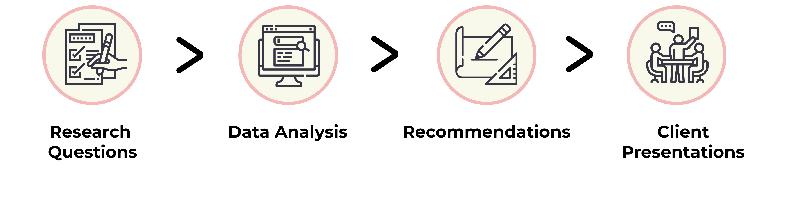
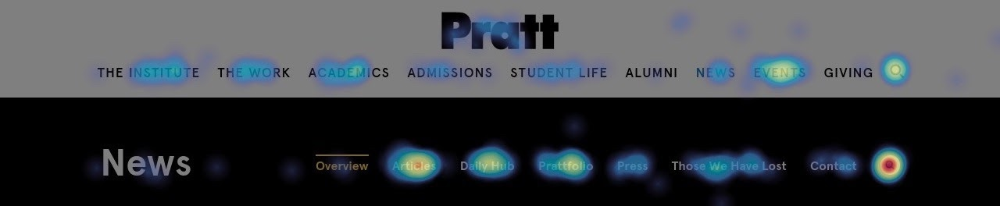
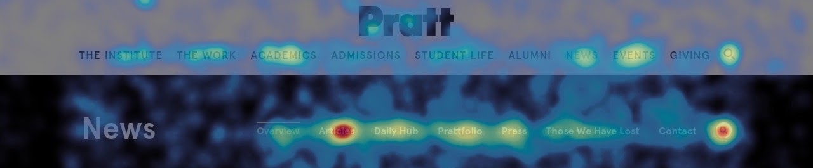

-
Client:
Pratt News
-
Guide:
Prof. Craig MacDonald
-
Team
Raunak Jangid, Kyle Kisicki, Chris Denney, Verena Tanzil
-
Tools:
Google Analytics, Hotjar, Miro, Adobe Aftereffects
-
Project timeline:
2 weeks, Fall 2021
Analyzing Pratt News website to understand user behavior and augment user engagement
Pratt news serves as a great information tool for prospective students who want to know more about the courses and culture at Pratt. We focused on understanding user behavior on the newly revamped Pratt News website using tools like heat-maps, scroll-maps and google analytics. We tested the overall usability of the website and recommended changes to augment user engagement and inform future redesign project of the main Pratt website.
my role
I worked alongside Chris, Kyle, Raunak and Verena to define the research questions and analyze data from google analytics and hotjar to discover usability issues with the newly revamped Pratt News wensite. Although most aspects of the project were completed by the team together, I focused on working through our fourth recommendation and designing proposed mock-ups for it. I also actively participated in the team meetings to discuss and iterate on our recommendations, while offering help to any team member who might have any blockers.
define+design+discover+dicuss
Brainstorming and Catergorizing Research Questions
As part of a class activity we collectively brainstormed the research questions that we wanted to focus on for this project. After we had a good set of questions, we grouped them based on a common theme. Our team focused on the user flow and website navigation questions.
Focusing on navigation related questions
Website navigation consisted not only the primary navigation menu but also how users access different arts of the website and move around the interface. Some of the key questions we focused on are as follows:
- 1. How do “tags” help users navigate the website?
- 2. How many users are likely to use the search functionality?
- 3. How do users engage with other website content?
Analyzing data from Hotjar and Google Analytics
We focused on a time frame of one week, 9/24 - 9/30 for our analysis. We looked at the various heat maps in hotjar and deviced our initial hypothesis and findings. Since about 64% of the website visitors were desktop users and our time frame so brief, we focused our attention on the desktop experience.
The role of navigation menu in the user flow
Immediately after looking at the heatmap from Hotjar we noticed that ~43% of the total clicks on the homepage were happening above the average fold on the desktop website and a large majority of which where contributed by the navigation menu. In conjunction with this model the movemap also reflected that most of the movement happened on or near the navigation menu.

In addition to this the two most clicked menu items were “Articles” and “Search”. So in order to better understand the user journey after clicking on these particular menu options we looked at the data from Google Analytics. To our surprise we saw a huge drop off rate of 94% after users clicked on “Articles” or “View all articles”. We also noticed a huge drop off rate between users who click on the search icon and the users who actually execute a search.
Lastly we saw a direct corelation in the user drop off rate and the number users visiting just one article. The scrollsmaps helped us realize that the root cause of the problem was the location of related articles section. Since only an average of about 46.8% users get to the bottom of the page, more than half of the users never see the related articles section which indeed points out to low engagement.
General Findings
Here is the summary of our high-level findings from the entire website:
- On average 43% of users clicked on the main navigation bar to move from one page to the next. 83% of total users scroll below the average fold.
- Of all features within the navigation bar, the search icon is the most popular (6.6% of site visitors). There is a significant drop-off between users that click the search icon and those who complete a search (1.7% of visitors).
- An average of 46.79% of Desktop users see the Related News articles after reading an article, with a range of 34% - 64%.
- 11% of the total clicks on the homepage are made on “View all articles”. But they are more likely to drop off soon after going to the linked page. But more than 94% of the user are likely to drop off from the articles page.
Sound Recommendations based on our Hypothesis
Based on our analysis of the website using Hotjar and Google Analytics we proposed 4 sound recommendations that could further enhance the user experience of the Pratt News website.
Reducing the height of the navigation and making it sticky
Firstly, we recommend making the navigation menu of the website sticky. The current implementation of a static navigation menu forces the user to scroll all the way back up and engage with the website. I feel making the navigation sticky would ease this burden off the users shoulder and let them easily navigate to different sections of the website. In addition to this we recommend compressing the main Pratt website navigation into a hamburger icon so that the users are not overwhelmed by the number of menu options. The interaction design of the navigation bar is as shown on the right.

Providing suggestive search and always keeping the news navigation options available
Secondly, we recommend changing the interaction design of the News search bar. The current design covers the whole navigation menu when expanded, which violates the system visibility heuristic. I feel that implementing our recommended changes to the search would significantly lower the search drop off rate. In addition to this if predictive/suggestive search functionality is implemented it would further motivate the user to use it.
Making the most out of the available negative space
Thirdly, we recommend moving the related articles section on the right side of the article content, right under the tags (for the desktop website) and making it sticky. I feel this would prompt the users to click and read more articles and further engage with the website.
Relabeling call to action buttons on articles page.
Lastly, we recommend relabeling the “View all articles” CTA button to “Browse all articles”. The current user flow takes the user to similar looking page, where the articles are broadly categorized. “Browse all articles” would align with the users mental model as they would expect to see some level of categorization on the next page, as opposed to “View all articles” where they expect to see the list of all the articles on the news website.
Happy Clients
The presentation was received by the client and we got a fairly positive feedback from them. They really appreciated the depth of detail we went into to present our recommendations and how the designs looked professional in nature.
Client 1: “Thank you so much for these design recommendation. They look really through and professional.”
Client 2: “Your findings also show us that the labels we chose for the navigation options are really working well.”
After Math
After the client presentation we were prompted with the question about the position of the related article section on a mobile screen. So I mocked up a probable solution for making the related articles section visible on the mobile screen.